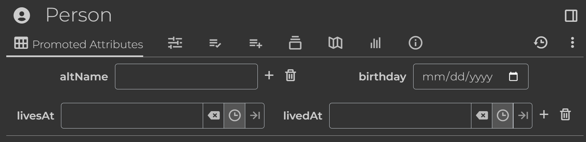

Declarative notes: Notes as code¶
One of the goals of this project is to enable building, maintaining, and sharing complex note hierarchies using Python. This approach is declarative in nature, inspired by SQLAlchemy’s declarative mapping approach.
The general idea of declarative programming is that you specify the desired end state, not the steps needed to reach it.
For a fully-featured example of a note hierarchy designed using this approach, see Example: Event tracker.
Note subclasses¶
The basic technique is to subclass BaseDeclarativeNote:
class MyNote(BaseDeclarativeNote):
pass
When you subclass BaseDeclarativeNote, you’re saying that attributes and child branches will be maintained by the class definition itself. Therefore any existing attributes or children will be deleted or modified to reflect the class.
Setting fields¶
Set the corresponding Note fields upon instantiation by setting attributes suffixed with _:
For example:
class MyNote(BaseDeclarativeNote):
title_ = "My title"
note_type_ = "text"
mime_ = "text/html"
content_ = "<p>Hello, world!</p>"
Adding attributes¶
To add attributes, use the decorators label and relation:
class Root(BaseDeclarativeNote):
note_id_ = "root"
@label("myLabel")
@relation("myRelation", Root)
class MyNote(BaseDeclarativeNote):
pass
my_note = MyNote()
This is equivalent to the following imperative approach:
my_note = Note(title="MyNote")
my_note += [
Label("myLabel"),
Relation("myRelation", Note(note_id="root")),
]
Icon helper¶
To set an icon (label #iconClass), simply set the icon attribute:
class MyTask(BaseDeclarativeNote):
icon = "bx bx-task"
Promoted attributes¶
A special type of label is one which defines a promoted attribute. Decorators label_def and relation_def are provided for convenience.
The following creates a workspace template with an icon and a few promoted attributes:
@label("person")
@label_def("altName", multi=True)
@label_def("birthday", value_type="date")
@relation_def("livesAt")
@relation_def("livedAt", multi=True)
class Person(BaseWorkspaceTemplateNote):
icon = "bx bxs-user-circle"

Adding children¶
Use children or child to add children:
class Child1(BaseDeclarativeNote):
pass
class Child2(BaseDeclarativeNote):
pass
class Child3(BaseDeclarativeNote):
pass
@children( # implicit branch prefix
Child1,
(Child2, "My prefix"),
)
@child(Child3, prefix="My prefix", expanded=True) # explicit branch params
class Parent(BaseDeclarativeNote):
pass
my_note = Parent()
This is equivalent to the following imperative approach:
my_note = Note(title="Parent")
my_note += [
Note(title="Child1"),
(Note(title="Child2"), "My prefix"),
Branch(child=Note(title="Child3"), prefix="My prefix", expanded=True),
]
Mixin subclasses¶
Sometimes you want to logically group and reuse attributes and/or children, but don’t need a fully-featured BaseDeclarativeNote. In those cases you can use a BaseDeclarativeMixin.
The basic technique is to subclass BaseDeclarativeMixin:
@label("sorted")
class SortedMixin(BaseDeclarativeMixin):
pass
Now you can simply inherit from this mixin if you want a note’s children to be sorted:
class MySortedNote(BaseDeclarativeNote, SortedMixin):
pass
Setting content from file¶
Set note content from a file by setting BaseDeclarativeNote.content_file:
class MyFrontendScript(BaseDeclarativeNote):
note_type_ = "code"
mime_ = "application/javascript;env=frontend"
content_file = "assets/myFrontendScript.js"
The filename is relative to the package or subpackage the class is defined in. Currently accessing parent paths ("..") is not supported.
Note
If you use Poetry and want to publish a Python note hierarchy with content from a file, no additional steps are needed to package these files if they reside in your project. If you use setuptools, you’ll need to use package_data or data_files to include them (however using setuptools for this is currently untested).
Singleton notes¶
In some cases it’s important to generate the same Note.note_id every time the class is instantiated. Templates, for example, should have only one instance and be automatically updated as changes are made to the code. This behavior can be accomplished in a number of ways.
Warning
Without setting BaseDeclarativeNote.leaf, TriliumAlchemy assumes that you want to explicitly specify the note’s children in the class itself. Therefore it will delete any existing children which aren’t declaratively added. See Leaf notes to learn more.
Setting singleton¶
When BaseDeclarativeNote.singleton is set, the note’s note_id is generated based on the fully qualified class name, i.e. the class name including its modpath.
The following creates a template note for a task:
@label("template")
@label("iconClass", "bx bx-task")
class Task(BaseDeclarativeNote):
singleton = True
Setting idempotent¶
When BaseDeclarativeNote.idempotent is set, the class name (not fully qualified) is hashed to generate note_id.
It uses the same hash algorithm used by BaseDeclarativeNote.singleton.
# note_id won't change if we move the class to a different module
@label("template")
@label("iconClass", "bx bx-task")
class Task(BaseDeclarativeNote):
idempotent = True
Setting note_id_seed¶
When BaseDeclarativeNote.note_id_seed is set, the provided value is hashed to generate note_id.
It uses the same hash algorithm used by BaseDeclarativeNote.singleton and BaseDeclarativeNote.idempotent.
# note_id won't change if we rename the class or move it to a different module
@label("template")
@label("iconClass", "bx bx-task")
class Task(BaseDeclarativeNote):
note_id_seed = "Task"
Setting note_id¶
When BaseDeclarativeNote.note_id_ is set, the provided value is used as Note.note_id directly.
class MyNote(BaseDeclarativeNote):
note_id_ = "my_note_id"
Passing note_id¶
When note_id is passed in the constructor of a BaseDeclarativeNote subclass, it’s similarly considered a singleton.
Child of singleton¶
Every child of a singleton note is required to also have a deterministic note_id. Therefore a note_id is generated for children of singletons, even if they don’t satisfy any of the above criteria.
This is recursive, so an entire note tree specified by BaseDeclarativeNote subclasses will be instantiated with a deterministic note_id if the root satisfies any of the above criteria.
Adding relations¶
You can declaratively add a relation to another note, as long as the target note is a singleton.
For example, to create a ~template relation:
@relation("template", Task)
class TaskInstance(BaseDeclarativeNote): pass
Now you can create a task by simply instantiating TaskInstance, and it will automatically have ~template=Task.
my_task = TaskInstance()
assert my_task.relations.get_target("template") is Task()
Custom initializer to add attributes and children¶
Implement BaseDeclarativeMixin.init to add attributes and children dynamically. Use the following APIs to add attributes and children:
These APIs are required for singleton notes to generate a deterministic id for attributes and children, generating the same subtree every time the BaseDeclarativeNote subclass is instantiated.
For example, a mixin which provides a convenient way to set an attribute #myLabel to a given value:
class MyMixin(BaseDeclarativeMixin):
my_label: str | None = None
"""
If set, add label `myLabel` with provided value.
"""
def init(self, attributes: list[Attribute], children: list[Branch]):
if self.my_label is not None:
attributes.append(
self.create_declarative_label("myLabel", self.my_label)
)
class MyNote(BaseDeclarativeNote, MyMixin):
"""
This note will automatically have the label `#myLabel=my-label-value`.
"""
my_label = "my-label-value"
my_note = MyNote()
assert my_note["myLabel"] == "my-label-value"
Leaf notes¶
If you design a note hierarchy using this approach, you might want to designate some “folder” notes to hold notes maintained in the UI. Set BaseDeclarativeNote.leaf to indicate this, in which case existing children are kept intact and using children or child will raise an exception.
For example, this would be necessary for a list of contacts:
@label("sorted")
class Contacts(BaseDeclarativeNote):
icon = "bx bx-group"
singleton = True
leaf = True
Now, assuming it has been placed in your hierarchy, you can access your contact list by simply instantiating Contacts.
If leaf is False and note_id is deterministically generated (e.g. it’s a singleton or child of a singleton), a label #cssClass=triliumAlchemyDeclarative is added by TriliumAlchemy. This enables hiding of the “Add child note” button in Trilium’s UI via the AppCss note added by BaseRootSystemNote.